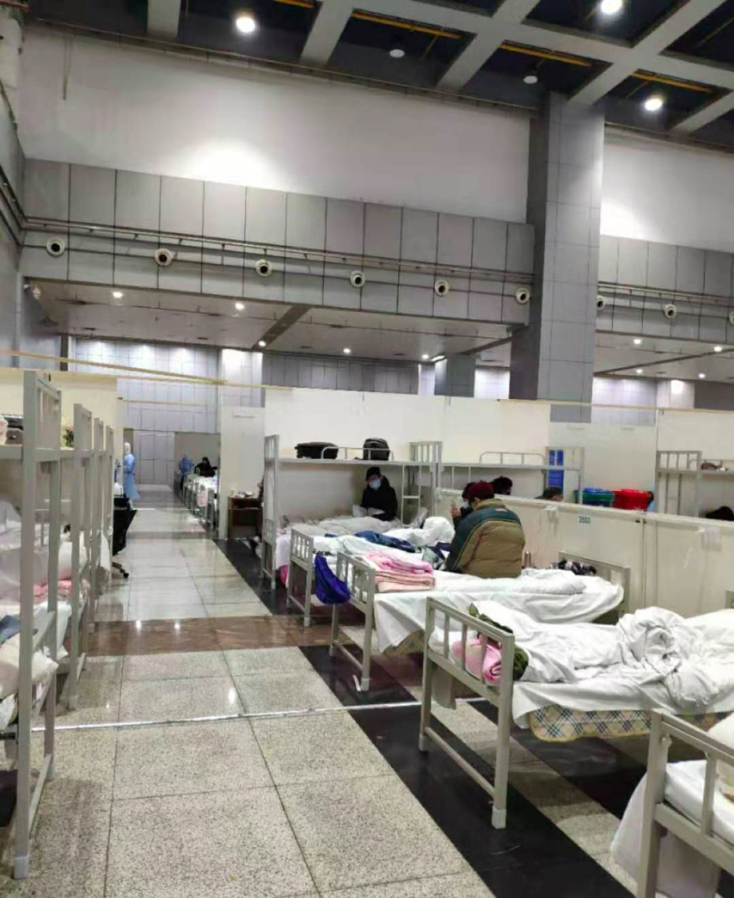
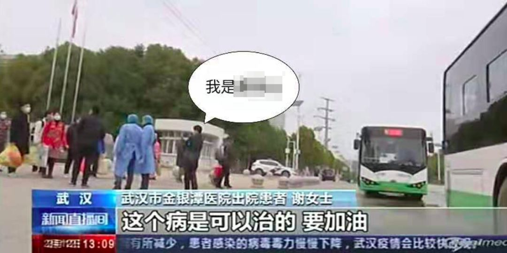

新冠肺炎治愈者：经历生死后，更热爱生活
原文链接 备份链接 澎湃新闻记者 朱莹 钟笑玫 明鹊 实习生 刘昱秀 李振东与病魔斗争了16天后终于治愈出院，他希望自己的经验能给病友提供借鉴。记者：闫海龙 魏凡 编辑：曾怡文 视频来源：澎湃新闻(04:53) 这个冬天，新冠肺炎疾风般席 …
像我这样一个心脏移植患者都能康复，相信能给更多人信心——这个病毒并不可怕。
口述 | 秦 天（化名）
整理 | 沈 林
2月11日，我从武汉金银潭出院了。对于一个心脏移植患者来说，这很不容易，就算是感染了普通的感冒，对我都是很危险的，因为我长期口服的抗排异药物，本身就会降低人的免疫力和抵抗力。
治疗期间，我好几次都觉得很害怕很绝望，身体状况最差的时候，还给妻子写了遗书，告诉她后事怎么处理，孩子怎么办，但很多人给了我无私的帮助和温暖的安慰，我能康复，很感谢他们。
我还记得我发病的那天，是1月23日，凌晨我突然发烧了，用了点退烧药，体温下去了，人的状态还是很差，就去附近的医院看了看，打了4天针，但是人还是很乏力，医院的医生说我这不是普通感冒，怀疑我是新冠肺炎，要赶紧去定点医院做进一步检查，综合考虑之下，我去了协和做检查。
协和也是我做心脏移植的医院，说起来，我之所以要换心，也是因为一场感冒，2014年的时候，我一直很忙，咳嗽了好几个月也没有管它，实在拖到很严重了才去医院检查，发现得了心肌炎，之后病情恶化成扩张型心肌病，2017年的时候，协和医院帮我做了心脏移植手术，到现在还一直在吃抗排异的药物。
现在回想，因为我每个月都要去医院开抗排异的药，我要么就是1月份在医院拿药的时候感染上的新冠病毒，要么就是去家乐福买东西的时候感染上的。后来在协和，我就确诊得了新冠肺炎。
在协和确诊后，我第一时间联系了此前帮我做过手术的刘金平教授，他虽然人在美国进修，但是我联系他，他很关心我的情况，一直在指导我，他跟我说，这个病药物是一个方面，个人的情绪也很重要，他让我一定要坚持，一定要吃东西。
确诊后，我也跟社区打了电话上报了一下，因为一时半会医院没有床位给我，所以我先在家里自我隔离。我确诊后回家就跟妻子分房生活了，孩子也被送到了老人家里照顾。我和妻子通过微信来联系，包括拿饭菜拿空碗洗澡，都提前联系好，错时进行，所以虽然生活在同一个房子里，但我们没有打过照面。当时的感觉是很无力的，整个人躺在床上起不来，每天都很沮丧。而且我和妻子虽然没有直接的交流，但我听到她的声音，我也知道她肯定哭了很多次，照顾我也费了很多心力。

妻子那段时间看新闻，看到有个人喝鸡汤喝好了，大概是鸡汤对提高身体免疫力有好处，她就帮我炖了鸡汤，我喝了以后，拉肚子，整个人很不好，吃了点肠胃药才停止腹泻。刘教授说可能是鸡汤太油腻了，后来妻子就把鸡汤倒掉了。但不知道为什么，第二天我觉得身体有了些力气，也有了食欲，慢慢可以进食了，那段时间我吃的是莫西沙星和阿比多尔，也不知道有没有起到效果。
在这期间，我的抗排异药物快吃完了，如果不能及时拿到药的话，一旦器官和自己的身体产生排斥，就会威胁我的生命。我就打电话给社区希望能得到帮助。
其实我刚刚搬到这个社区没多久，对社区的运转不是很熟悉，但我运气很好，碰到一个很负责的工作人员，彭宏同志。我不知道他的职位，就连名字也是最近才搞清楚的，之前打电话一直喊“陈主任”，他也不纠正我，但我整个治疗期间，他给予了我们家特别多的关照，我隔离期间都是他请人帮我们送菜。我的抗排异药物快用完的时候，他还主动联系车辆送我妻子去协和拿药，之后方舱医院建好了，也是他通知我过去。

住在方舱医院期间
2月6日，我住进了方舱医院，但是当时那里的环境还比较乱，旁边床位的病人时不时地咳嗽，还有发烧病人，我刚有点好起来，心里有点害怕，刘教授也让我尽量不要跟这么多病人住在一起，毕竟我做过心脏移植，免疫力比较差。我跟方舱医院里的医生说了我的情况，我没记住他的名字，只知道他是天津医疗队的医生，他得知我的情况后，就联系帮我转院。于是当天晚上，我住进了金银潭医院的病房。

住院的时候，我每天都从这个窗户看窗外
跟我一个病房的，还有方舱医院转过来的重症患者。我住在综合楼，这里的病房是重症和轻症一起收的，一个病房里有3张床，我住在中间，我旁边是一个70多岁的老大爷，前两天状态很差，血压忽高忽低，大小便失禁，生活完全不能自理，连监护器都上了，看着老大爷的样子，我心理压力很大，也跟医院申请想换病房的，但是金银潭没有多余的病床了，所以就被迫一起住了几天，那些天我没怎么休息好。
幸好，抢救了两三天后，老大爷的情况慢慢好转了，我快出院的时候，他已经可以自己吃饭上厕所了。
住在我另一边的是一个27岁的博士，他看上去精神不太好，但他个人感觉还好，不过医生说他的CT片子照出来肺部感染很严重，几乎全白了，属于重症患者。还有一个加床的病人也睡在我们病房，他是参加过新闻里说的那个万人宴，不过他跟我一样，属于轻症病人。
金银潭的医生对我们很温柔细致，因为我当时已经没有什么不舒服了，所以入院后只做了一些检查，也没有给我开药，我还有些担心。医生说他对我们每个人的病情都很了解，看了我的验血报告，都是比较正常的，不需要进行药物治疗，只做隔离和观察。
我在金银潭呆了5天，2月11日医生通知我可以出院了。本来央视要采访我，我觉得我并不算金银潭的一个典型病例，所以就拒绝了。出院的时候，我带着病历本去结账，工作人员告诉我，我一分钱都不需要花，政府已经帮我买单了。那天，我还把住院期间穿过的衣服都扔掉了，还有住院用的洗脸盆子也都扔掉了。

这是央视拍到的我
这里还有一个小插曲，出院的时候我身份证、医保卡没有带在身上，于是我又打电话给彭宏，他在电话里听到我要出院了很开心，很快就答应帮我安排车送过来，我说能不能顺便带我回家，他也一口答应了。不过，后来我才知道出院的病人必须统一乘坐一辆公交车离院，所以就没有坐彭宏给我安排的车。
其实我还有很多要感谢他的，一个社区很大，我也只是给社区的公共电话打了一次，他就记住了我的情况，主动手机打给我问我的情况，后来我就一直保存着他的手机号，之前我病情不稳定的时候，住不上院很烦躁，经常打电话给他，有的时候甚至是埋怨他，跟他发火，还骂他是骗子，但他从来没有拒接过我的电话，一直都是很耐心地安慰我鼓励我帮助我，而我甚至没有叫对过他的名字，直到现在，我也没有见过他的面。
说实话，我觉得我当时的粗鲁，亲戚朋友也许可以忍受，但是他作为一个陌生人，能够这样帮助我，我心里真的很感激，这也是为什么我主动联系媒体，想要把我的这段经历写出来的原因。另一个原因就是，像我这样一个心脏移植患者都能康复，相信能给更多人信心——这个病毒并不可怕。

征集令
《新民周刊》现面向全国征集新冠肺炎采访对象和真实故事：
如果你是参与抗击新冠肺炎疫情的医护人员或其家属，我们希望聆听你的“战疫”故事，也希望传达你的诉求。
如果你是确诊、疑似患者本人或家属，我们希望了解你和家人如何“抗疫”的过程，让外界了解你的真实经历。
如果你是疫情严重地区的普通市民，我们希望展现你的乐观，并倾听你所需的帮助。
如果你是公共服务人员或各类捐助者，我们希望看到你的“最美逆行”，记录下你的无私。
……
抗击新冠肺炎疫情，我们诚征对疫情了解的社会各界人士，提供相关线索，说出你的故事，让我们用新闻留存这一切。
《新民周刊》新冠肺炎线索征集值班编辑联系方式（添加时请简要自我介绍）：
周一：应 琛 微信号：paulineying0127
周二：金 姬 微信号：gepetta
周三：黄 祺 微信号：shewen-2020
周四：周 洁 微信号：asyouasyou
周五：孔冰欣 微信号：kbx875055141
周六：吴 雪 微信号：shyshine1105
周日：姜浩峰 微信号：jianggeladandong
新闻是历史的底稿，你们是历史的见证者。
期待你的故事、你的线索！

▼
大家还都在看这些
▼
转载请在评论区留言，获得授权！
转载时，须注明作者、出处和微信号


原文链接 备份链接 澎湃新闻记者 朱莹 钟笑玫 明鹊 实习生 刘昱秀 李振东与病魔斗争了16天后终于治愈出院，他希望自己的经验能给病友提供借鉴。记者：闫海龙 魏凡 编辑：曾怡文 视频来源：澎湃新闻(04:53) 这个冬天，新冠肺炎疾风般席 …
原文链接 备份链接 司机停下车来思忖着说，怎么给导到这里来了？ 那是一条土路，树在旁边矗立着。春天还没到来，它的叶子还没长出来。 “前方800米左转，500米后再左转”，导航里的声音软糯着。 金银潭医院是此次行程的目的地。这是武汉市最大的 …
原文链接 备份链接 我也是个普通人，也会恐惧。但我是一名医务工作者，同时是一名党员；我们黄冈的疫情是全国城市里除武汉之外最重的几个之一，这样的困难情况下，我们不去，谁去？必须要坚持，一定要挺住。 口述 | 陈 林 整理 | 王 煜 我是湖 …
原文链接 备份链接 【财新网】（记者 高昱） 感染科医生的除夕 先戴口罩，然后是帽子，接着穿白色的清洁工作服，也就是医生护士们每天穿的白大褂。领子要竖起来，尽可能遮住脖子。 最重要的是第四步，穿连体防护服。非织造布的防护服经过了复膜处理， …
原文链接 备份链接 方舱医院患者出院还是比较快的，这样周转起来，就可以接收大量的病人，可以做到“应收尽收”。 文 | 黄 祺 13天前，武汉新冠肺炎疫情仿如“暗夜”——社区还有大量感染者未能得到诊断，他们如果得不到及时的治疗，病情很可能 …